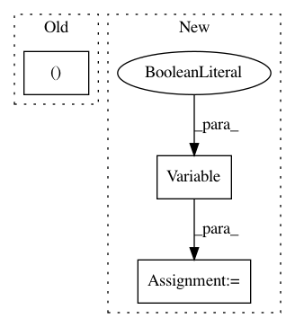

af79a5c7760057a7dec1b68b97639cc69f40c3ea,train.py,,evaluate,#,26
Before Change
for b, batch in enumerate(val_iter):
src, len_src = batch.src
trg, len_trg = batch.trg
src, trg = src.cuda(), trg.cuda()
output = model(src, trg)
loss = F.cross_entropy(output.view(-1, vocab_size),
trg.contiguous().view(-1), ignore_index=pad)
After Change
src, len_src = batch.src
trg, len_trg = batch.trg
src = Variable(src.data.cuda(), volatile=True)
trg = Variable(trg.data.cuda(), volatile=True)
output = model(src, trg)
loss = F.cross_entropy(output.view(-1, vocab_size),
trg.contiguous().view(-1), ignore_index=pad)
total_loss += loss.data[0]
In pattern: SUPERPATTERN
Frequency: 3
Non-data size: 3
Instances
Project Name: keon/seq2seq
Commit Name: af79a5c7760057a7dec1b68b97639cc69f40c3ea
Time: 2017-12-03
Author: kwk236@gmail.com
File Name: train.py
Class Name:
Method Name: evaluate
Project Name: vinhkhuc/PyTorch-Mini-Tutorials
Commit Name: 713df9556d874cf9ede91563fccb746b8c54c35f
Time: 2017-05-24
Author: knvinh@gmail.com
File Name: 6_lstm.py
Class Name:
Method Name: predict
Project Name: IBM/AIF360
Commit Name: 3cb9c2500c2b7aa82a4d4663e7a7b4fbdfa5edee
Time: 2020-02-19
Author: hoffman.sc@gmail.com
File Name: aif360/sklearn/inprocessing/adversarial_debiasing.py
Class Name: AdversarialDebiasing
Method Name: fit